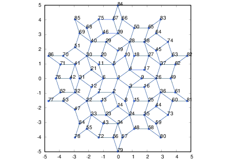

Coordinates of Penrose tiling
The following clusters of Penrose tiling were generated by iteratively applying the inflation-deflation rule. We regard each vertex of the rhombuses as a site. The coordinates of every sites are found in "coordinate", where the length of each edge is set to be 1. The order of the data in "coordinate" refers to the numbering denoted in the image of each cluster. This numbering is also used in "site connectivity", which shows pairs of sites connected by each edge of the rhombuses.11 sites
coordinate site connectivity 31 sites
coordinate site connectivity 86 sites
coordinate site connectivity  226 sites
coordinate site connectivity 
601 sites
coordinate site connectivity (Click the image to see the numbering of sites.) 1591 sites
coordinate site connectivity (Click the image to see the numbering of sites.) 4181 sites
coordinate site connectivity (Click the image to see the numbering of sites.)

{kind=link}
{kind=link}
{kind=link}
{kind=link}
{kind=link}
{kind=link}